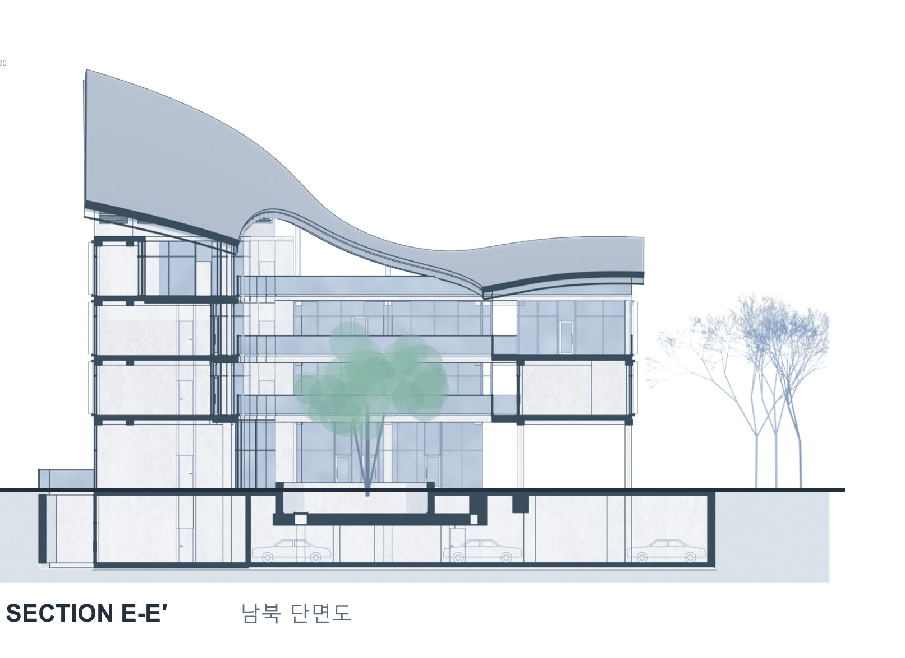

ORBIT : Centripetal Force of Coexistence
서로 다른 시간을 사는 30대 비혈연 4인을 위한 공동주택. 원형 선큰 거실(CORE)로 모으고, 1.4m 순환 복도(LOOP)로 돌게 하고, 아트리움(NEXUS)으로 시선을 잇는다.
SHINGU UNIVERSITY · DEPARTMENT OF ARCHITECTURE
"공존하기 때문에 발생하는 문제를 공간으로 해결할 수 있는가?" — 서로 다른 사람들이 부딪히지 않고 함께 사는 방법을 공간으로 고민하는 신구대학교 건축학과 유시윤의 포트폴리오입니다.
2025 – 2026 학부 설계 스튜디오 작품
서로 다른 시간을 사는 30대 비혈연 4인을 위한 공동주택. 원형 선큰 거실(CORE)로 모으고, 1.4m 순환 복도(LOOP)로 돌게 하고, 아트리움(NEXUS)으로 시선을 잇는다.

In Progress각자의 공간, 하나의 지붕. 네 세대가 같은 나무를 바라보는 소규모 복합문화시설.
부재와 영역을 클릭하거나 모드를 전환하여 형태 생성 원리와 공간 조닝(Zoning)을 직접 검토할 수 있습니다.
SPATIAL ZONING & VIEW
• 권장 용량: 빠른 웹 로딩을 위해 개당 5MB ~ 25MB 이하 권장
• 배포 경로: models/building.glb에 넣으면 자동 로드
• 지원 포맷: .glb(단일 바이너리 권장), .gltf
SECTION VIEW
EXPLORE KEY ELEMENTS
[CORE]로 모으고, [LOOP]로 순환하며, [NEXUS]로 연결한다. 서로 다른 속도의 삶이 부딪히지 않고 공존하는 우주적 질서를 통해, 타인은 비로소 가족이 된다.
심사위원과 평가자의 관심 영역(조형·동선·구조·도시 맥락)을 선택하여 핵심 설계 전략을 즉시 검토하세요.
도면 선 추출
공간 렌더링 및 시각화
패널 레이아웃 및 프레젠테이션